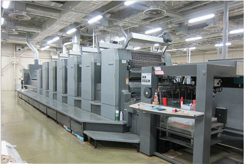

常见印刷机机型？中国印告诉你中国印 2019-12-7 19:59
← Sidebar Menu Thingy
大家都知道印刷机的发明和进步为人类文明和文化的发展起到了重要的作用。印刷机的种类繁多，可通过印刷形式和工艺来分类。目前，为了满足现代人对高档彩色印刷品的需求，制造出了八色组甚至目前还有十色组的多色双面印刷，印刷技术也因此逐日提升和成熟。下面我就来详解下上海印刷厂印刷机。首先印刷机是按四个类别进行分类，按照印版形式分类、印刷纸张分类、印刷方式分类和印刷墨色种类分类。按照印版形式分类的有凸版印刷机、平版印刷机、凹版印刷机和丝网印刷机。按印刷纸张分类的有单张纸印刷机和卷筒纸印刷机。按印刷方式分类的有平压平印刷机、圆压平印刷机和停回转印刷机。按印刷墨色种类来分类的印刷机最多分别有这些：单色印刷机、双色印刷机、多色印刷机、双面单色印刷机和双面双色印刷机。
平压平型印刷机的结构特点是，装版机构和压印机构均呈平面形。印刷时，压印平版绕主轴进行往复摆动，完成输纸和压印。由于印版图文部分的油墨和压印平版同时全部接触，因而压印时间较长，对承印物所施加的压力较大，故印刷品的墨色浓重，线条、笔划饱满。
平压平型印刷机，体积较小，印刷速度慢，生产效率低，适用印刷幅面小的印刷品，如：贺卡、请柬、书刊封面、信封、标签等。这类印刷机有活字版打机机、铜锌版打样机和圆盘机等。圆压圆型印刷机，利用压印滚筒和印版滚筒不停息的接触并进行压印，运动平稳、结构简单、印刷速度快。若将印刷装置组合在一起，设计成卫星式或机组式的印刷机，还可以进行双面、多色印刷，生产效率很高。这类印刷机，目前使用的最多，有平版印刷机，凹版印刷机、柔性版印刷机和印刷书刊、报纸的高速卷筒纸印刷机等。
我想一个上海印刷厂如果拥有多机组的印刷机这就代表了印刷企业实力的象征，也是设备制造商能力的表现。然而拥有多种功能的多机组固然好，但是我想上海印刷厂据企业需求选择最适合的设备才是关键。